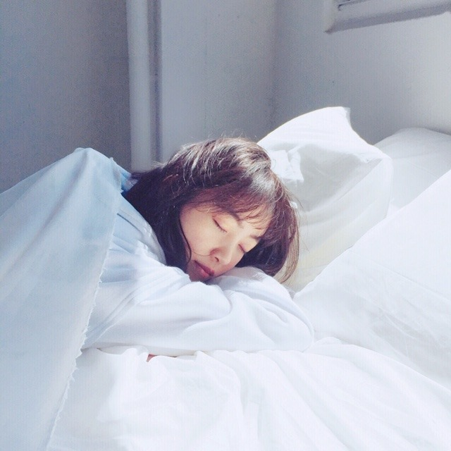
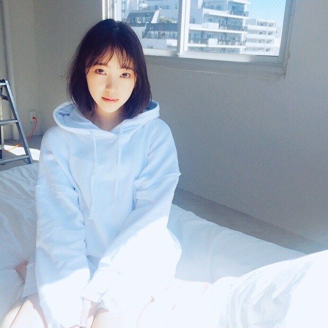
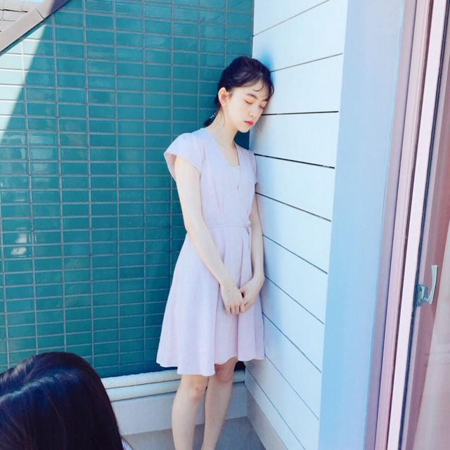
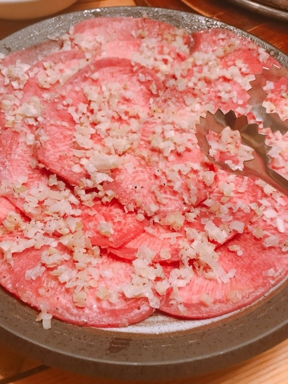

2019/0625Tuear
発売中のarのオフショット♪



いただいた写真を見たら
目をつむってる写真がほとんどでびっくりしました。笑
表紙の写真、本当お気に入りなんだー！
見てくださいましたか？☺︎
昨日は、お仕事終わりにみり愛と蘭世と焼肉を食べてからまだ食べ足りなくてファミレスに行きました。
昨日は、お仕事終わりにみり愛と蘭世と焼肉を食べてからまだ食べ足りなくてファミレスに行きました。
ずっとずっとずっと話してて、家族みたいで、友達のような、心地のいい存在です。
あ、一昨日はお仕事終わりに絢音とサムギョプサルを食べに行きました。
上海から帰ってきて1番に絢音に会えて嬉しかったなぁ。

誰かが落ち込んでいる時、そっとそばに寄り添いあえる関係って素敵だなと改めて(^-^)
ありがとう☺︎
告知
雑誌
「東海ウォーカー」
「TVガイドAlpha EPISODE U」
「装苑」
「別冊spoon.」表紙
「シネマスクエア」
「seventeen」
「日経エンタテイメント！」
「プチコミック」
「BOMB」
「FINEBOYS」
「+act. （プラスアクト）」
「ar」初表紙
「TV station」
「ベツコミ」
「Maybe」
「EX大衆」表紙
「美的」
「BRODY」
「MYOJO」
「アップトゥボーイ」表紙
「週刊ビックコミック スピリッツ」表紙
「cheese!」
「TV navi」
「OVRETURE」
「TV Bros.」表紙
明日「anan」
TV
6/26 17:55～
「テレ東音楽祭2019」
6/26 18:30～、6/27 18:30〜
「まるっと！ぎふ」
6/28 23:40〜
「ネタパレ」
6/29 8:30〜
「にじいろジーン」
6/29 19:00〜
「99人の壁」
地元、岐阜県
NHK岐阜 のまるっと！ぎふ のロケで久しぶりに帰りましたが空気の匂いも温度も変わってなくて安心しました。
懐かしい場所を回り懐かしい思い出を話し、楽しいロケでした
見てね
では
2019/06/25 19:15
コメント(244)
再びコメント✨
20時前後のコメント載ってないや(笑)
？仕方ないか？(笑)
とにかく頑張っていこう！
ではではまたね。
ほなね、堀ちゃん☺
20時前後のコメント載ってないや(笑)
？仕方ないか？(笑)
とにかく頑張っていこう！
ではではまたね。
ほなね、堀ちゃん☺
がんば
ブログ更新ありがとう！
arもちろん買ったよ〜！
みおちゃんにとっておめでたい初表紙号だからね☺︎
目つむっちゃってるのかわいい！
何しててもかわいいってことは天性のアイドルだね❤︎
表紙わたしも大好き〜！
とっても綺麗な青空の下、ひらひらのピンクの日傘さして髪結んでてピンクのワンピース着てて全部が素敵でわたしの好みの女の子って感じ！！
2期生とたくさんご飯行ってお話できてよかったね！
信頼し合える仲間って素敵☺︎
テレビもいっぱい出るんだね〜！
岐阜のは多分残念ながらチェックできないけど、他のは全部見るからね！
楽しみにしてる☺︎
嬉しいお知らせたくさんあって幸せ❤︎
arもちろん買ったよ〜！
みおちゃんにとっておめでたい初表紙号だからね☺︎
目つむっちゃってるのかわいい！
何しててもかわいいってことは天性のアイドルだね❤︎
表紙わたしも大好き〜！
とっても綺麗な青空の下、ひらひらのピンクの日傘さして髪結んでてピンクのワンピース着てて全部が素敵でわたしの好みの女の子って感じ！！
2期生とたくさんご飯行ってお話できてよかったね！
信頼し合える仲間って素敵☺︎
テレビもいっぱい出るんだね〜！
岐阜のは多分残念ながらチェックできないけど、他のは全部見るからね！
楽しみにしてる☺︎
嬉しいお知らせたくさんあって幸せ❤︎
未央奈さん、こんにちは！
マメな更新ありがとうございます
arもちろん見ましたよ
最近の表紙の中でarが
一番のお気に入りです(^_^)
夏が始まるよ～って感じが出ていて
大好きです！
オフショット
立ったまま寝てしまったのかと
思っちゃいました
あっ！冗談です(^_^)
お食事のお話しありがとうございます
お仕事忙しいから
しっかり食べているのか
気になっていたところです
お食事のはしご
食欲があって一安心です(^_^)
メンバーさんとお話しも弾んだ様で
楽しく過ごせて良かったですね
タン塩が美味しそう～
TVも録画して観ま～す！
心地のいい存在、寄り添いあえる関係
大切にして下さいな
マメな更新ありがとうございます
arもちろん見ましたよ
最近の表紙の中でarが
一番のお気に入りです(^_^)
夏が始まるよ～って感じが出ていて
大好きです！
オフショット
立ったまま寝てしまったのかと
思っちゃいました
あっ！冗談です(^_^)
お食事のお話しありがとうございます
お仕事忙しいから
しっかり食べているのか
気になっていたところです
お食事のはしご
食欲があって一安心です(^_^)
メンバーさんとお話しも弾んだ様で
楽しく過ごせて良かったですね
タン塩が美味しそう～
TVも録画して観ま～す！
心地のいい存在、寄り添いあえる関係
大切にして下さいな
未央奈ブログ更新ありがとう！
最近、未央奈ちゃん雑誌にいっぱい載ってるから、幸せなのー！アップトゥーボーイよかったぁーーー！全部お気に入りなのー。BRODYの未央奈の名言は僕が選ばれましたよ！Twitter企画で採用されました。みてみて！
明日も、レコメン！楽しみです。
がんばるぞぉー
では。
ようちゃんマン
最近、未央奈ちゃん雑誌にいっぱい載ってるから、幸せなのー！アップトゥーボーイよかったぁーーー！全部お気に入りなのー。BRODYの未央奈の名言は僕が選ばれましたよ！Twitter企画で採用されました。みてみて！
明日も、レコメン！楽しみです。
がんばるぞぉー
では。
ようちゃんマン
みおなちゃん更新ありがとう╰(*´︶`*)╯♡
arのオフショットありがとう（╹◡╹）♡
可愛いっすなぁ(*´꒳`*)
みり愛ちゃんと蘭世ちゃんと焼肉からのファミレスに行ったんだねー(๑>◡<๑)
良き時間を過ごせたならなによりです٩(๑❛ᴗ❛๑)۶
絢音ちゃんとも食事に行けて良きでしたね(*´-`)
告知もありがと〜･:*+.\(( °ω° ))/.:+
チェックしますねー！
ロケで久しぶりに岐阜に帰れて良きでしたね（╹◡╹）♡
arのオフショットありがとう（╹◡╹）♡
可愛いっすなぁ(*´꒳`*)
みり愛ちゃんと蘭世ちゃんと焼肉からのファミレスに行ったんだねー(๑>◡<๑)
良き時間を過ごせたならなによりです٩(๑❛ᴗ❛๑)۶
絢音ちゃんとも食事に行けて良きでしたね(*´-`)
告知もありがと〜･:*+.\(( °ω° ))/.:+
チェックしますねー！
ロケで久しぶりに岐阜に帰れて良きでしたね（╹◡╹）♡
もうナゴヤドームライブまで1週間だね。
10日間予報によると
初日の3日は晴れ、最高気温34℃
翌4日は雨時々晴れ、最高気温25℃。
ちょいちょい名古屋の天気も予報と変わってるので、この通りにはならないかとは思うけど、予報通りだとあまりにも気温差があるのでくれぐれも体調に気を付けて。
今年は元気に、ただいま、おかえりをやらんとね。
10日間予報によると
初日の3日は晴れ、最高気温34℃
翌4日は雨時々晴れ、最高気温25℃。
ちょいちょい名古屋の天気も予報と変わってるので、この通りにはならないかとは思うけど、予報通りだとあまりにも気温差があるのでくれぐれも体調に気を付けて。
今年は元気に、ただいま、おかえりをやらんとね。
とてもかわいいです これからもずっと応援してます！！
ブログ更新ありがとう
おつかれ～
いつでもかわいいなぁ未央奈ちゃん
大好き
おつかれ～
いつでもかわいいなぁ未央奈ちゃん
大好き
オフショット！リラックス感が伝わってきて、癒されます。
上海から帰ってこられて、やっぱり会いたいのは同期のメンバーさん達なのですね～。美味しいもの食べながら、たくさんおしゃべりできて良かったですね
ヤバイ、「まるっと！ぎふ」見たすぎるんですけど、これは地域限定放送ですよね
テレ東音楽祭ほか見れそうなものは、このあと録画します。TV情報ありがとうございます
上海から帰ってこられて、やっぱり会いたいのは同期のメンバーさん達なのですね～。美味しいもの食べながら、たくさんおしゃべりできて良かったですね
ヤバイ、「まるっと！ぎふ」見たすぎるんですけど、これは地域限定放送ですよね
テレ東音楽祭ほか見れそうなものは、このあと録画します。TV情報ありがとうございます
未央奈ブログ更新ありがとう
いつもいつも励みになってます！
テレ東音楽祭楽しみ
みり愛や蘭世みたいな家族的な存在が近くに、しかもたくさんいるのは未央奈の人柄があってこそやし羨ましいなぁ〜
僕も焼肉週末に食べにいきました！
塩タン8人前ぐらい食べたかも……笑
じゃあまたの…
いつもいつも励みになってます！
テレ東音楽祭楽しみ
みり愛や蘭世みたいな家族的な存在が近くに、しかもたくさんいるのは未央奈の人柄があってこそやし羨ましいなぁ〜
僕も焼肉週末に食べにいきました！
塩タン8人前ぐらい食べたかも……笑
じゃあまたの…
オフショットいいね☺︎
ブログ更新ありがとう ✨
堀未央奈ちゃん可愛い＼(^-^)／
映画絶対に見ます❗
堀未央奈ちゃん可愛い＼(^-^)／
映画絶対に見ます❗
どうもかずです。
スピリッツ見ました。
浴衣、夏を感じて良きでした。
印象的だったのは見開き１ページ目。
すごく良い笑顔だと思いました(^^)
arは見つかりませんね。
やっぱり乃木坂ちゃんは人気ですね。
明日あたり大きな書店に行ってきます。
では。
スピリッツ見ました。
浴衣、夏を感じて良きでした。
印象的だったのは見開き１ページ目。
すごく良い笑顔だと思いました(^^)
arは見つかりませんね。
やっぱり乃木坂ちゃんは人気ですね。
明日あたり大きな書店に行ってきます。
では。
未央奈ちゃんこんばんは！ありがとうございます‼頑張ります‼ありがとうございます！頑張ります‼今日から頑張ります‼やってしまった。ありがとうございます！
みおなちゃん☺
ブログ更新ありがとう♪
arの表紙、夏らしくて
好きですよ(＾ω＾)
TVもチェックしないと。
ブログ更新ありがとう♪
arの表紙、夏らしくて
好きですよ(＾ω＾)
TVもチェックしないと。
初めてコメントさせて頂きます。
今、家族のお仕事関係のためオーストラリアにいます、7月日本一時帰国の時に、ホットギミック観に行くことがとても楽しみです。
パレッタの頃から未央奈さんの透明感が大好きです。私の雰囲気は乃木坂メンバーの中では未央奈さんと一番近いので、親近感を持って応援させて頂いております。
私は映画が大好きなので、これからも映画女優として活躍されるであろう未央奈さんを心から楽しみに応援したいです。沢山活躍して下さいね。
今、家族のお仕事関係のためオーストラリアにいます、7月日本一時帰国の時に、ホットギミック観に行くことがとても楽しみです。
パレッタの頃から未央奈さんの透明感が大好きです。私の雰囲気は乃木坂メンバーの中では未央奈さんと一番近いので、親近感を持って応援させて頂いております。
私は映画が大好きなので、これからも映画女優として活躍されるであろう未央奈さんを心から楽しみに応援したいです。沢山活躍して下さいね。
ほりっぴ～、ナンチです♪
ブログ更新ありがとう～
ネギタン塩が美味しそうすぎるよ
ar
永久保存版にしたよ
オフショットもめっちゃうれしい
にじいろジーンが実は楽しみ
ぐっさんとのやり取りが見たい～
ブログ更新ありがとう～
ネギタン塩が美味しそうすぎるよ
ar
永久保存版にしたよ
オフショットもめっちゃうれしい
にじいろジーンが実は楽しみ
ぐっさんとのやり取りが見たい～
ブログ更新ありがとう！
握手会と映画は楽しみです！
握手会と映画は楽しみです！
目をつむってても開いてる時でも、堀ちゃんは超絶可愛い!!(*´-`) そして、一緒に居て心地いい存在って素敵だねぇ♪♪ 誰かが落ち込んでる時←ってとこがちょっぴり気にはなったけど...(゜_゜;)
こんばんは。ブログ更新ありがとうございます。
目をつぶった写真って、星野みなみちゃんの得意技でしたが、未央奈ちゃんも可愛いですね！！今年流行るかな？
乃木中の2期生特集、面白かったです！！今野さんの意外な一面が見られて良かったです。乃木坂46ファミリーの仲の良さ、いつまでも。
ではまた。
目をつぶった写真って、星野みなみちゃんの得意技でしたが、未央奈ちゃんも可愛いですね！！今年流行るかな？
乃木中の2期生特集、面白かったです！！今野さんの意外な一面が見られて良かったです。乃木坂46ファミリーの仲の良さ、いつまでも。
ではまた。
最近色々なところで堀さんの情報を耳にして、なんかすごく毎日が楽しいです笑笑
ほんと大好きです。
ほんと大好きです。
みおなさんも色んなTVに個人で出始めましたね。
２期生の星として応援します。
体調には気をつけて。お盆の京セラドームライブ行きますからね。
では俺の名はグレイからでした。
２期生の星として応援します。
体調には気をつけて。お盆の京セラドームライブ行きますからね。
では俺の名はグレイからでした。
今日 BRODYを買いに本屋さんに行ったのですが、隣にあったアップトゥボーイの未央奈と目が合って気づいた時には手に取っていました。
ほんとに魅力が沢山あって、応援しててよかったと思ってしまいます。これからも無理せず頑張ってください！
ほんとに魅力が沢山あって、応援しててよかったと思ってしまいます。これからも無理せず頑張ってください！
こんばんみーお♪
ブログありがとう！
オフショありがとう！！！！
牛たんクレヨンしんちゃん☆
29日舞台挨拶、
30日握手楽しみ☆
わたる⊿
ブログありがとう！
オフショありがとう！！！！
牛たんクレヨンしんちゃん☆
29日舞台挨拶、
30日握手楽しみ☆
わたる⊿
ホットギミックは公開日に観に行くよ！
しかも一人で！笑
一人映画初めてでドキドキするけどすっごく楽しみ！
しかも一人で！笑
一人映画初めてでドキドキするけどすっごく楽しみ！
本で読んだんですが
ホットギミック面白かったです！
映画が待ち遠しいです！！
そして、いつもお疲れ様です(*^^*)
レコメンが当たりません(●︎´▽︎`●︎)
ホットギミック面白かったです！
映画が待ち遠しいです！！
そして、いつもお疲れ様です(*^^*)
レコメンが当たりません(●︎´▽︎`●︎)
未央奈～こんばんは！
ぽてとです！
オフショットありがたや♪
パーカーの好き！
ほっとできる存在、何でも話せる存在て
大きいよね！
本格的に梅雨入りだけど
雨にも負けずやね！
来月握手会たのしみおな
ぽてとです！
オフショットありがたや♪
パーカーの好き！
ほっとできる存在、何でも話せる存在て
大きいよね！
本格的に梅雨入りだけど
雨にも負けずやね！
来月握手会たのしみおな
未央奈ちゃん、こんばんは(^o^)/
3枚目の壁にもたれるような格好で目を瞑ってるのは寝てるのかな？
久しぶりに地元に戻って少しはゆっくり出来たのかな？
3枚目の壁にもたれるような格好で目を瞑ってるのは寝てるのかな？
久しぶりに地元に戻って少しはゆっくり出来たのかな？
焼肉食べてスタミナつけて、夏を乗り切るぞ。前に夏のイメージがあるかなっていってたけど、未央奈は、夏だけど涼しげとか、夏でもクールビューティとか、すでに、夏の暑さを越えた存在だよ。握手会とナゴヤドーム楽しみです。
上海からお帰りなさい！
映画の公開が楽しみ♪
未央奈ちゃんはホント可愛いし魅力的だし大好き！
今回のホットギミックを機にソロでいろんな映画に出演できるように頑張ってね！
ただ無理して体調崩さないように
映画の公開が楽しみ♪
未央奈ちゃんはホント可愛いし魅力的だし大好き！
今回のホットギミックを機にソロでいろんな映画に出演できるように頑張ってね！
ただ無理して体調崩さないように
ブログ更新ありがとう！
まるっと岐阜、絶対見ます。
楽しみです。
まるっと岐阜、絶対見ます。
楽しみです。
堀さん、こんばんは。
寝てる堀さんもかわいいですね。arの表紙は堀さんの笑顔も最高の青空も好きです。
会うだけで安心できる仲間が居るって素晴らしいですね。ホットギミック後の堀さんの変化を他のメンバーさん達は何か感じてたりするのかなってふと思いました。
アップトゥボーイ見ました。
堀さんの白くて美しい肌がたくさん写っていて、「日焼けと蚊が怖いから長袖着て！」って思いました。
見開きで４つの表情を見せる堀さんが全て可愛くて、その表情筋の発達具合に感心しました。もしかしたらアイドルのウィンクや堀さんの高速瞬きはボディビルダーの胸筋ピクピクと同じことなのかもと思いました。
一番好きなのは白黒ロンパースと赤サンダルのときの右ページです。髪型表情目線服装の肌出し加減が気が強そうで一貫してて、この可愛さには勝ち目がないって思わされて心底好きです。
インタビューでは、最後の「人生は続いていく」という内容がとても良かったです。真に大事なことをちゃんと伝えてると共に堀さんの哲学と映画のメッセージを見事に融合させていて完璧な締めでした。
めちゃくちゃ忙しいのに沢山ブログ更新してくれてありがとうございます。舞台挨拶にライブの準備にと大変だと思いますけど、なんとか休息も取りつつ頑張ってくださいね。応援してます。
寝てる堀さんもかわいいですね。arの表紙は堀さんの笑顔も最高の青空も好きです。
会うだけで安心できる仲間が居るって素晴らしいですね。ホットギミック後の堀さんの変化を他のメンバーさん達は何か感じてたりするのかなってふと思いました。
アップトゥボーイ見ました。
堀さんの白くて美しい肌がたくさん写っていて、「日焼けと蚊が怖いから長袖着て！」って思いました。
見開きで４つの表情を見せる堀さんが全て可愛くて、その表情筋の発達具合に感心しました。もしかしたらアイドルのウィンクや堀さんの高速瞬きはボディビルダーの胸筋ピクピクと同じことなのかもと思いました。
一番好きなのは白黒ロンパースと赤サンダルのときの右ページです。髪型表情目線服装の肌出し加減が気が強そうで一貫してて、この可愛さには勝ち目がないって思わされて心底好きです。
インタビューでは、最後の「人生は続いていく」という内容がとても良かったです。真に大事なことをちゃんと伝えてると共に堀さんの哲学と映画のメッセージを見事に融合させていて完璧な締めでした。
めちゃくちゃ忙しいのに沢山ブログ更新してくれてありがとうございます。舞台挨拶にライブの準備にと大変だと思いますけど、なんとか休息も取りつつ頑張ってくださいね。応援してます。
堀さんは、すべてが、ポーズですよね、神々しいほど、きれいです。絵になってます。堀さんは芸術家、そして光り輝くダイヤモンドです。どこにいても輝いてます。本屋さんで、どの表紙も、堀さんは光り輝いてます。堀さんは、たとえ、落ち込んだり、大変なことが、あっても、それを、面白く、わくわくに転化させることができる、器の大きな、強くて、やさしい女性です。堀さんは岐阜県が生んだ本物のスターの中のスターです。
未央奈～☆☆
arのオフショット、見れて嬉しいな～
arに乗っていたショットとは雰囲気が違って、
なんかリラックスしてるように見えるね。
arの撮影現場はそれだけ居心地がいのかなー
そうそう上海から帰ってきたんだね。
未央奈、おかえり～
上海では何か美味しいものは食べれた？
今週のTV出演の数、凄いね！
"ホットギミック ガールミーツボーイ"の公開もあるし、
今週は幸せな週になりそうだな～笑
arのオフショット、見れて嬉しいな～
arに乗っていたショットとは雰囲気が違って、
なんかリラックスしてるように見えるね。
arの撮影現場はそれだけ居心地がいのかなー
そうそう上海から帰ってきたんだね。
未央奈、おかえり～
上海では何か美味しいものは食べれた？
今週のTV出演の数、凄いね！
"ホットギミック ガールミーツボーイ"の公開もあるし、
今週は幸せな週になりそうだな～笑
サムギョプサル美味しそう！
肉って見てるだけで気分が上がりますね。
焼き肉たくさん食べて、元気になってこれからの暑い夏を乗り切りましょう～。
韓国料理の辛さをたまに凄い体が欲する。笑
以前、お土産でもらったキンパの味が忘れられなくて、おいしい韓国料理店探して食べに行こうと思ってます。
写真は長良川ですかね。
清流がまるで堀ちゃんの心のようですね～。笑
肉って見てるだけで気分が上がりますね。
焼き肉たくさん食べて、元気になってこれからの暑い夏を乗り切りましょう～。
韓国料理の辛さをたまに凄い体が欲する。笑
以前、お土産でもらったキンパの味が忘れられなくて、おいしい韓国料理店探して食べに行こうと思ってます。
写真は長良川ですかね。
清流がまるで堀ちゃんの心のようですね～。笑
装苑買ったよ！！！清水君との世界観が出来ててめちゃくちゃ良かった！素敵すぎました。映画楽しみにしてます。絶対に観に行きますね！！
え、未央奈ちゃん眠いの？
きっと「目を閉じてても画になる」って意味だね！
落ち込んでたりするのかな？大丈夫？
みんなで支え合ってくの大事だね(^^)
未央奈ちゃんが思っている以上に、岐阜県は変化が起こっている‥(怖い話風 )
)
きっと「目を閉じてても画になる」って意味だね！
落ち込んでたりするのかな？大丈夫？
みんなで支え合ってくの大事だね(^^)
未央奈ちゃんが思っている以上に、岐阜県は変化が起こっている‥(怖い話風
堀ちゃんブログ更新ありがとう。
寝てる堀ちゃん気持ち良さそう、かわいいよ。
焼き肉食べてからファミレス？
あり得ないんですけど(笑)
今日の生放送音楽祭楽しみだよ。
まるっと岐阜見たいな、でも岐阜だけなんだよね、隣県の長野でもやってほしいな。
レコメンも楽しみ、必ず聴くよ。
じゃあね、バイバイキーン
寝てる堀ちゃん気持ち良さそう、かわいいよ。
焼き肉食べてからファミレス？
あり得ないんですけど(笑)
今日の生放送音楽祭楽しみだよ。
まるっと岐阜見たいな、でも岐阜だけなんだよね、隣県の長野でもやってほしいな。
レコメンも楽しみ、必ず聴くよ。
じゃあね、バイバイキーン
ほっちゃん！
お疲れ様ー！！！
岐阜に帰れてよかったね！リフレッシュできた？
ほっちゃんが2期生とご飯行ったりとかしたときに
ブログに書いてくれることが2期への愛がこもってるし
ダダ漏れでなんかこっちまで幸せになる笑笑
2期生の仲良い感じがぎゃん好き！
またいろいろ書いて欲しいです！
あと、ar見ました！
表紙俺も大好き！目をつぶってる写真も好きばい？笑
これからも応援しとるよーーー！
ではでは！
ほっちゃんらしく頑張って
たくたくより
お疲れ様ー！！！
岐阜に帰れてよかったね！リフレッシュできた？
ほっちゃんが2期生とご飯行ったりとかしたときに
ブログに書いてくれることが2期への愛がこもってるし
ダダ漏れでなんかこっちまで幸せになる笑笑
2期生の仲良い感じがぎゃん好き！
またいろいろ書いて欲しいです！
あと、ar見ました！
表紙俺も大好き！目をつぶってる写真も好きばい？笑
これからも応援しとるよーーー！
ではでは！
ほっちゃんらしく頑張って
たくたくより
毎回思うのですがファミレスでそういう場面に遭遇したらどのような対応したら正解なのでしょうか？笑
ツアー頑張ってください( ˙꒳˙ )
ツアー頑張ってください( ˙꒳˙ )
堀ちゃん忙しい中ブログ更新ありがとう！
ほんとオフショットにはもったいないくらいの写真ですね！
目つぶってる写真とかほんと癒されます( ´∀｀)
そばに寄り添ってくれる関係っていいですよね
相談に乗ってくれたり、一緒にわいわい遊んだりして、そういう人がそばにいてくれるだけで心強いですよね(^_^)
もうすぐ映画公開ですね！楽しみです！
ほんとオフショットにはもったいないくらいの写真ですね！
目つぶってる写真とかほんと癒されます( ´∀｀)
そばに寄り添ってくれる関係っていいですよね
相談に乗ってくれたり、一緒にわいわい遊んだりして、そういう人がそばにいてくれるだけで心強いですよね(^_^)
もうすぐ映画公開ですね！楽しみです！
堀さん、おはようございます。
『ar』さんのオフショット。白い服が清潔感あふれて爽やかで、とてもすてき。
そして眠れる美女（ふふ）。ま、堀さんは与田さんセンターの「寝顔船選抜」でも晴れて選抜入りしている人ですから、寝顔がきれいなのは言うまでもなし（ふふ）。
『乃木坂工事中』二期生特集の進行お疲れさまでした。改めて二期生のたどってきた道のりをふり返るよい機会になりました。スタジオライブの『スカウトマン』もよかったです。
地元岐阜でのロケ。変わらずふるさとは風光明媚なところですね。地元で英気を養って、またお仕事がんばってください。
ではまたコメント寄せます。
さらばだ、また会おう！（気球に乗って去りぬ〜）
『ar』さんのオフショット。白い服が清潔感あふれて爽やかで、とてもすてき。
そして眠れる美女（ふふ）。ま、堀さんは与田さんセンターの「寝顔船選抜」でも晴れて選抜入りしている人ですから、寝顔がきれいなのは言うまでもなし（ふふ）。
『乃木坂工事中』二期生特集の進行お疲れさまでした。改めて二期生のたどってきた道のりをふり返るよい機会になりました。スタジオライブの『スカウトマン』もよかったです。
地元岐阜でのロケ。変わらずふるさとは風光明媚なところですね。地元で英気を養って、またお仕事がんばってください。
ではまたコメント寄せます。
さらばだ、また会おう！（気球に乗って去りぬ〜）
堀ちゃん、大好きだよー
未央奈さん上海から帰って来てお疲れ様です 。今日はテレビ東京音楽祭ですね。楽しみにしてます‼️どの写真も好きです。韓国料理好きなんだ⁉️僕は辛いの食べられない 。絢音さんに会えて良かったです。これからもツアーとかホツトギミルクと乃木坂46の活動大変忙しくなりますね。頑張って 。今度岐阜県行ったことが無いから行ってみたいな。
オフショットで目を
つむってるのが多いのは撮影の
時オンだった未央奈のスイッチが
オフショットだったからじゃない？


つむってるのが多いのは撮影の
時オンだった未央奈のスイッチが
オフショットだったからじゃない？
ブログありがとー
友人、親友はずっと大切にすべきだよね
友人、親友はずっと大切にすべきだよね
未央奈ちゃん更新ありがとー！
本日もお綺麗でございます。
幸せ(￣ー￣)
焼肉いいなー。
最近行けてないから友達誘ってみようかな。
誰かが側にいてくれるって大事。
ではでは
今日も素敵な１日を。
本日もお綺麗でございます。
幸せ(￣ー￣)
焼肉いいなー。
最近行けてないから友達誘ってみようかな。
誰かが側にいてくれるって大事。
ではでは
今日も素敵な１日を。
堀ちゃんお早う✨
上海映画祭授賞式おめでとう ✨ ✨
今週末はＴＶ堀ちゃん祭りだね❤️
どの番組も楽しみにしてるよ
映画も勿論楽しみに行ってきます
上海映画祭授賞式おめでとう ✨ ✨
今週末はＴＶ堀ちゃん祭りだね❤️
どの番組も楽しみにしてるよ
映画も勿論楽しみに行ってきます


あと、最近、世界遺産を調べる機会がありまして…今一番気になっているのが、白川郷なんです。特に冬の景色がとても綺麗で、画像で魅力されました。いつか行ってみたいなと思います。